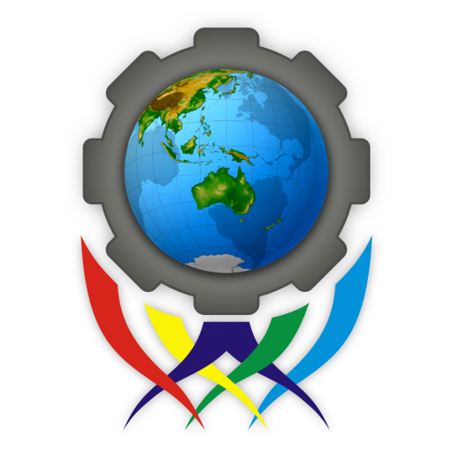
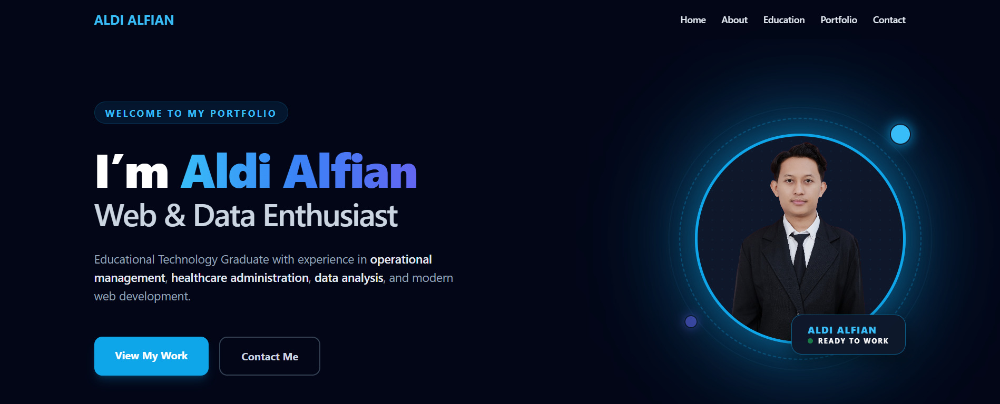
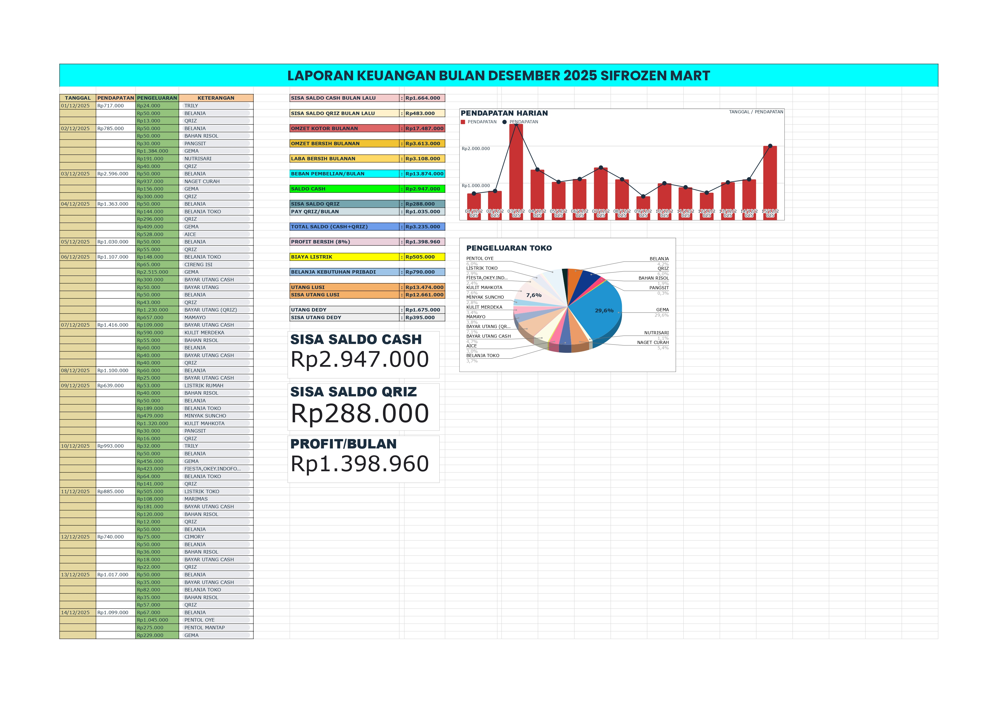
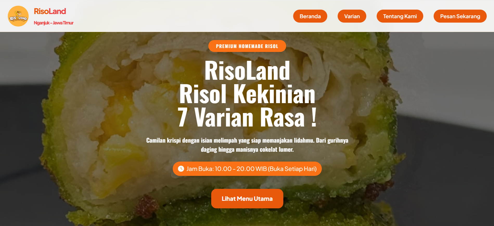

Operational Management
Sifrozen Mart
Mengelola ritme operasional harian dengan fokus pada efisiensi, ketepatan pencatatan, dan pengalaman pelanggan yang konsisten.
Aldi Alfian
Preparing a refined portfolio experience
Operational Management • Web Developer • Creative Designer
Saya menggabungkan pemikiran operasional yang tajam dengan desain visual yang presisi untuk menciptakan pengalaman digital yang bernilai dan bermakna.

Saya merupakan lulusan Teknologi Pendidikan dari Universitas Negeri Surabaya dengan pengalaman di bidang manajemen operasional ritel dan administrasi layanan kesehatan. Saya pernah mengelola Sifrozen Mart serta bekerja sebagai staf registrasi di RSI Aisyiyah Nganjuk.
Perspective
Saya memadukan ketelitian operasional, rasa estetika, dan pemahaman teknologi untuk menghasilkan solusi yang terasa matang, bersih, dan usable.
4
Years study
3.67
Final GPA
10+
Projects
Core background
Pengalaman saya terbangun dari situasi nyata: mengelola operasi, menjaga ketepatan data, dan menciptakan visual yang membantu orang memahami informasi dengan lebih cepat.
Mengelola ritme operasional harian dengan fokus pada efisiensi, ketepatan pencatatan, dan pengalaman pelanggan yang konsisten.
Bekerja di area registrasi dengan perhatian tinggi pada dokumentasi, komunikasi, dan menjaga alur layanan tetap lancar.
Membangun antarmuka, visual branding, dan presentasi digital yang sederhana namun kuat secara konseptual.
2018 — 2022
S1 Teknologi Pendidikan • IPK akhir 3.67

2015 — 2018
Teknik Pemesinan • Lulus dengan kompetensi utama yang kuat pada ketelitian dan kerja sistematis.
Frontend
HTML, Tailwind CSS, JavaScript, responsive interface crafting
Backend
Laravel, basic SQL, structured logic, and workflow thinking
Office
Microsoft Office, spreadsheets, data organization, reporting
Design
Canva, Corel Draw, Photoshop, vector illustration, visual storytelling
Management
Operational coordination, documentation, consistency, planning
Soft Skills
Communication, adaptability, attention to detail, commitment to growth
Koleksi karya desain vektor yang menonjolkan bentuk sederhana, detail yang terarah, dan estetika visual yang konsisten.




Pencatatan transaksi harian, cashflow, dan analisa laba yang membantu proses operasional menjadi lebih teratur dan efisien.

Proyek website development dengan fokus tampilan modern, struktur yang rapi, dan pengalaman pengguna yang lebih nyaman.